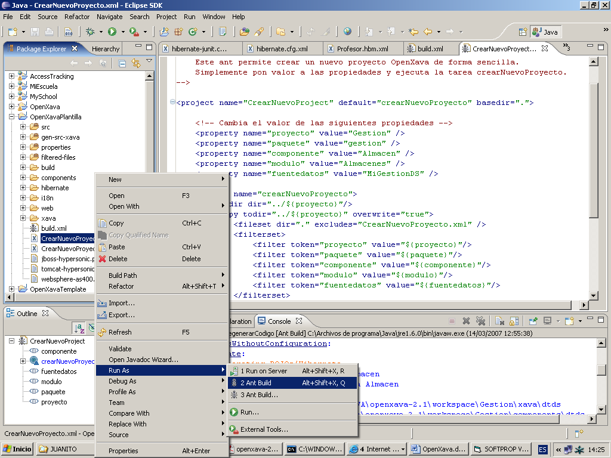
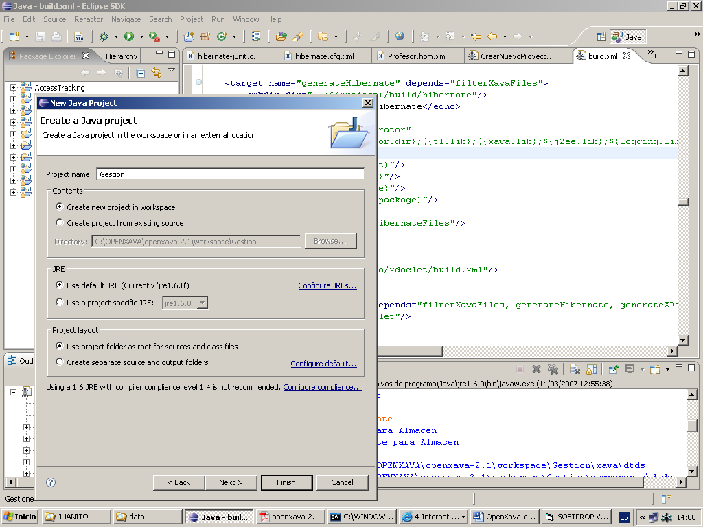
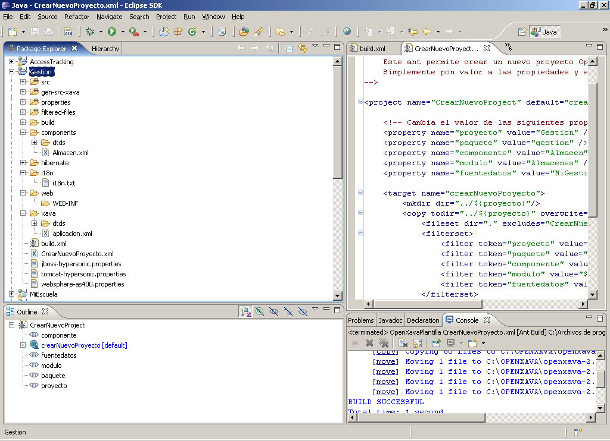

Table of Contents
Mi primer proyecto OpenXava 2.x
Primero tienes que configurar tu entorno.Crear un proyecto nuevo
PASO 1.-Abrir el Eclipse y apuntando al workspace que viene en la distribución de OpenXava (openxava.zip).PASO 2.-Para crear un nuevo proyecto hemos de editar el archivo CrearNuevoProyecto.xml en el proyecto OpenXavaPlantilla de esta forma:
<property name="proyecto" value="Gestion" /> <property name="paquete" value="gestion" /> <property name="componente" value="Almacen" /> <property name="modulo" value="Almacenes" /> <property name="fuentedatos" value="MiGestionDS" />PASO 3.-Ejecutar CrearNuevoProyecto.xml usando Ant. Podemos hacerlo con Botón Derecho en CrearNuevoProyecto.xml > Run as > 2 Ant Build (la segunda opción sin los 3 puntitos (…))

PASO 4.-Con File-New-Project-Java Project en Eclipse creamos el proyecto Gestion.

PASO 5.-Comprobar que se han creado los siguientes directorios en el Package Explorer de Eclipse

Ya tenemos listo nuestro proyecto, vamos al siguiente paso que es configurar la base de datos.
Configurar base de datos
OpenXava genera una aplicación J2EE pensada para ser desplegada en un servidor de aplicaciones J2EE (desde la v2.0 las aplicaciones OpenXava también funcionan en un simple servidor de servlets, como Tomcat).Dentro de OpenXava solo se indica el nombre JNDI (Interfaz de Nombrado y Directorio Java, que permite a los clientes descubrir y buscar objetos a través de un nombre) de la fuente de datos, y en nuestro servidor de aplicaciones tenemos que configurar nosotros esa base datos. El configurar una fuente de datos en un servidor de aplicaciones es algo que va más allá de esta guía, sin embargo a continuación se da las instrucciones concretas para poder realizar este primer proyecto usando el Tomcat (con Liferay) incluido en la distribución de OpenXava e Hypersonic como base de datos. Este Tomcat esta en la carpeta openxava2.1/portal.
PASO 6.- Con el Tomcat parado editar el archivo context.xml en el directorio de Tomcat openxava2.1/portal /conf, y añadir la siguiente entrada:
<Resource name="jdbc/MiGestionDS" auth="Container" type="javax.sql.DataSource" maxActive="20" maxIdle="5" maxWait="10000" username="sa" password="" driverClassName="org.hsqldb.jdbcDriver" url="jdbc:hsqldb:hsql:localhost:1666"/>Comentario:
Se muestra el fichero context.xml para el caso que tengamos también definidas las configuraciones de las BBDD de las aplicaciones de ejemplo, se indica en rojo el código introducido:
<!-- The contents of this file will be loaded for each web application --> <Context> <!-- Default set of monitored resources --> <WatchedResource>WEB-INF/web.xml</WatchedResource> <!-- Uncomment this to disable session persistence across Tomcat restarts --> <!-- <Manager pathname="" /> --> <Resource name="jdbc/OpenXavaDS" auth="Container" type="javax.sql.DataSource" maxActive="20" maxIdle="5" maxWait="10000" username="sa" password="" driverClassName="org.hsqldb.jdbcDriver" url="jdbc:hsqldb:file:../data/openxava-db"/> <Resource name="jdbc/OpenXavaTestDS"auth="Container" type="javax.sql.DataSource" maxActive="20" maxIdle="5" maxWait="10000" username="sa" password="" driverClassName="org.hsqldb.jdbcDriver" url="jdbc:hsqldb:file:../data/openxava-test-db"/> <Resource name="jdbc/ProductSaleDS" auth="Container" type="javax.sql.DataSource" maxActive="20" maxIdle="5" maxWait="10000" username="sa" password="" driverClassName="org.hsqldb.jdbcDriver" url="jdbc:hsqldb:file:../data/product-sale-db"/> <Resource name="jdbc/MySchoolDS" auth="Container" type="javax.sql.DataSource" maxActive="20" maxIdle="5" maxWait="10000" username="sa" password="" driverClassName="org.hsqldb.jdbcDriver" url="jdbc:hsqldb:file:../data/my-school-db"/> <Resource name="jdbc/MiEscuelaDS" auth="Container" type="javax.sql.DataSource" maxActive="20" maxIdle="5" maxWait="10000" username="sa" password="" driverClassName="org.hsqldb.jdbcDriver" url="jdbc:hsqldb:file:../data/my-school-db"/> <Resource name="jdbc/BookingDS" auth="Container" type="javax.sql.DataSource" maxActive="20" maxIdle="5" maxWait="10000" username="sa" password="" driverClassName="org.hsqldb.jdbcDriver" url="jdbc:hsqldb:file:../data/booking-db"/> <Resource name="jdbc/MiGestionDS" auth="Container" type="javax.sql.DataSource" maxActive="20" maxIdle="5" maxWait="10000" username="sa" password="" driverClassName="org.hsqldb.jdbcDriver" url="jdbc:hsqldb:hsql:localhost:1666"/> </Context>Lo importante aquí es el nombre JNDI, que es a lo único que se hace referencia desde OpenXava, en este caso MiGestionDS. Los atributos driverClassName y url dependen de nuestra base de datos, en este caso estamos usando Hypersonic.
Nuestro primer componente
Crear un componente OpenXava es sencillo, la definición de cada componente está en un archivo XML de sintaxis sencilla.PASO 7: Para empezar podemos editar el archivo Almacen.xml, del directorio Gestion/components que ya tenemos, y lo dejamos como sigue:
<?xml version="1.0" encoding="ISO-8859-1"?> <!DOCTYPE componente SYSTEM "dtds/componente.dtd"> <componente nombre="Almacen"> <entidad> <propiedad nombre="codigoZona" clave="true" longitud="3" requerido="true" tipo="int"/> <propiedad nombre="codigo" clave="true" longitud="3" requerido="true" tipo="int"/> <propiedad nombre="nombre" tipo="String" longitud="40" requerido="true"/> </entidad> <mapeo-entidad tabla="GESTION@separator@ALMACENES"> <mapeo-propiedad propiedad-modelo="codigoZona" columna-tabla="ZONA"/> <mapeo-propiedad propiedad-modelo="codigo" columna-tabla="CODIGO"/> <mapeo-propiedad propiedad-modelo="nombre" columna-tabla="NOMBRE"/> </mapeo-entidad> </componente>Comentario:
En esta definición observamos 2 partes diferenciadas, la primera es entidad. Entidad sirve para definir el modelo principal para este componente, la información que ponemos aquí se usa para crear las clases Java y demás recursos para trabajar con el concepto de Almacén. El código generado usa POJO (clases de java convencionales) con EJB3 JPA (nuevo en v2.1) o Hibernate (nuevo en v2.0) para la persistencia. La tecnología EJB2 (con EntityBeans CMP2) también está soportada. En esta parte no solo se define la estructura de los datos sino también la lógica de negocio asociada.
Dentro de entidad vemos definidas un conjunto de propiedades, vamos a examinarlo:
<propiedad nombre="codigoZona" (1) clave="true" (2) longitud="3" (3) requerido="true" (4) tipo="int" (5) />Este es su significado:
(1) nombre: Es el nombre de la propiedad en el código Java generado y también sirve como identificador de esta propiedad dentro de los archivos OpenXava.
(2) clave: Indica si esta propiedad forma parte de la clave. La clave identifica a cada objeto de forma única y normalmente coincide con la clave en la tabla de base de datos.
(3) longitud: Longitud de los datos visualizados. Es opcional, pero suele ser útil para hacer mejores interfaces gráficos.
(4) requerido: Indica si hay que validar la existencia de información en esta propiedad antes de crear o modificar.
(5) tipo: Es el tipo de la propiedad. Todo tipo válido para una propiedad Java se puede poner, lo que incluye tipos integrados, clases del JDK, clases propias, etc.
Las posibilidades de propiedad van mucho más allá de lo que aquí se muestra, se puede ver una explicación más completa en el capitulo 3.
Por otra parte tenemos el mapeo, en donde relacionamos nuestro componente con una tabla de la base de datos, la sintaxis es obvia. El uso de @separator@ en el nombre de tabla nos permite que la misma aplicación funcione con bases de datos que soporten colecciones o esquemas (en este caso GESTION es el nombre del esquema) y las que no, simplemente tenemos que dar en nuestro build.xml el valor '.' o '_' a separator. (Para aquellas BBDD que no utilicen esquemas deberà escribirse mapeo-entidad tabla=" ALMACENES"> o sea mapeamos directamente a la tabla, sin mencionar el esquema)
Ahora estamos listos para generar código, para eso hemos de ejecutar la tarea ant generarCodigo.
La forma más práctica de ejecutar una tarea ant en Eclipse es dándola de alta en Externals Tools, de esta forma cuando queremos volver a ejecutarla lo podemos hacer simplemente escogiéndola del menú. Es muy importante configurar la tarea para que refresque el proyecto Gestion después de ejecutarse. El build.xml que tenemos en nuestro proyecto tiene ya configuradas las tareas ant más usadas.
Después de generar el código podemos ejecutar un Build, y comprobar que no hay errores.
Con un componente hecho ya podemos definir una aplicación OpenXava.
PASO 8: Vamos a dar de alta en Eclipse en External Tools la tarea ant generarCodigo, (es conveniente haberse leído la lección anterior (puntos 2.1 al 2.5) de concimientos previos de Eclipse, donde se explica los detalles mínimos para entender que hace un fichero Build), para ello:
- Pulsar en la flechita negra que tiene el botón con una flecha verde y una caja de herramientas.
- Escoger 'External tools', aparece un diálogo.

- Pulsar 'New' (botón que está arriba a la izquierda que es una hojita en blanco con una cruz amarilla)
- Pon nombre a tu tarea, por, ejemplo: 'Gestion.generarCodigo', u otro nombre que te guste.
- En build file indicamos ${workspace_loc:/Gestion/build.xml} que es la dirección del fichero build
- Ve a la carpeta (pestaña) 'refresh' y escoge 'The entire workspace'
- Ve a la carpeta (pestaña) 'targets' y marca la tarea ant generarCodigo, fíjate para desmarcar cualquier otro que pudiera estar marcado.
- Pulsa el botón 'Apply' para grabar la tarea predefinida.
- Pulsa el boton 'Run', esto la ejecuta.
- Comprueba que se ha generado dentro de la carpeta gen-src-java los siguientes ficheros:

Comentario:
Ahora ya está disponible para volverla a ejecutar siempre que haga falta, (pulsando en la flechita negra que tiene el botón con una flecha verde y una caja de herramientas otra vez)
Si no estuvieran generados estos ficheros, debes volver a ejecutar la tarea ant generarCodigo tal como se describe en el párrafo anterior.
La aplicación
En OpenXava se entiende que una aplicación es el producto final que el usuario va a utilizar. Una aplicación está compuesta por un conjunto de módulos. Un módulo es la unión entre un componente (sobre qué se quiere trabajar) y un conjunto de controladores (qué es lo que se quiere usar). Como era de esperar una aplicación se define con un archivo XML, el archivo xava/aplicacion.xml. Si hemos hecho bien el paso de crear el proyecto, ya deberíamos tener a punto el archivo, vamos a revisarlo de todas formas:PASO 9: Comprobamos que el fichero xava/aplicacion.xml está generado y es éste:
<?xml version "1.0" encoding "ISO-8859-1"?> <!DOCTYPE aplicacion SYSTEM "dtds/aplicacion.dtd"> <aplicacion nombre="Gestion"> <modulo nombre="Almacenes"> <modelo nombre="Almacen"/> <controlador nombre="Typical"/> </modulo> </aplicacion>Comentarios:
En este caso tenemos definido un solo módulo Almacenes, este nombre de módulo es el que se usará en la URL de nuestro navegador para ejecutarlo, o el nombre del portlet si desplegamos la aplicación en un portal. Definimos como modelo Almacen, el componente que hemos definido antes, y como controlador Typical, este controlador predefinido nos permite hacer un mantenimiento (altas, bajas, modificaciones y consultas), además de generar un informe en PDF y exportar a Excel. Desde un punto de vista visual se puede decir que con controlador definimos los botones que van a aparecer y con modelo los datos; aunque esta visión es excesivamente simple.
La tabla
Antes de poder probar la aplicación hemos de crear la tabla en la base de datos:PASO 10: Arrancamos la base de datos en el puerto 1666: Desde la línea de órdenes vamos a la carpeta openxava2.1/portal/bin y ejecutamos:
- En Linux/Unix: ./starthsqldb.sh gestion-db 1666
- En Windows: starthsqldb gestion-db 1666
Con esto lo que hacemos es crear un fichero llamado gestion-db en la carpeta openxava2.1/portal/data que corresponde con nuestra base de datos. Dentro de dicha base de datos podemos tener varios esquemas. En nuestro caso cuando definimos el componente, ya hicimos referencia a un esquema llamado GESTION (que no tiene por qué coincidir con el nombre de la base de datos) dentro de la base de datos, pero en dicho componente no hicimos referencia a la base de datos. Para seguir la pista a localizar la base de datos que usamos, hemos de tener en cuenta que en el fichero context.xml indica en que URL tenemos nuestra base de datos (o sea le puerto 1666 de nuestro localhost); en el build.xml tenemos la siguiente línea <property name="datasource" value="MiGestionDS"/>) que apunta a MiGestionDS que se define en context.xml; pero al arrancar el servicio de HSQL con la base de datos gestion-db en el puerto 1666 estamos usando la URL de MiGestionDS. Por tanto hay que tener un poco de cuidado y saber como referenciar a nuestras bases de datos.
PASO 11: Creamos la tabla:
- Editamos Gestion/build.xml. Buscamos dentro del fichero la tarea ant actualizarEsquema.
- Asignamamos a schema.path, “../OpenXavaTest/lib/hsqldb.jar”.
PASO 12: Creamos la tarea ant actualizarEsquema. Podemos operar igual que en el PASO 8
- Pulsar en la flechita negra que tiene el botón con una flecha verde y una caja de herramientas.
- Escoger 'External tools', aparece un diálogo.
- Pulsar 'New' (botón que está arriba a la izquierda que es una hojita en blanco con una cruz amarilla)
- Pon nombre a tu tarea, por, ejemplo: 'Gestion.generarCodigo', u otro nombre que te guste.
- En build file indicamos ${workspace_loc:/Gestion/build.xml} que es la dirección del fichero build
- Ve a la carpeta (pestaña) 'refresh' y escoge 'The entire workspace'
- Ve a la carpeta 'targets' y marca la tarea ant actualizarEsquema, fíjate para desmarcar cualquier otro que pudiera estar marcado.
- Pulsa el botón 'Apply' para grabar la tarea predefinida.
- Pulsa el botón 'Run', esto la ejecuta.
Ahora ya está disponible para volverla a ejecutar siempre que haga falta, (pulsando en la flechita negra que tiene el botón con una flecha verde y una caja de herramientas otra vez)
PASO 13: Arrancamos el Tomcat y ya está todo listo. Para ello deberá ejecutar los siguientes ficheros que se encuentran en el directorio openxava2.1:
- start-portal.bat (en Windows)
- start-portal.sh (en Linux)
Ejecutar nuestra aplicación
Después de nuestro duro trabajo tenemos derecho a ver el fruto de nuestro sudor, así que allá vamos:PASO 14: Ejecutamos la tarea ant desplegarWar. Para ello se procede igual como se hizo en el paso 8 o el paso 12, pero con la tarea desplegarWar.
PASO 15: Abrimos un navegador de internet y vamos a la dirección:
http://localhost:8080/Gestion/xava/module.jsp?application=Gestion&module=Almacenes
Y ahora podemos jugar con nuestro módulo y ver como funciona.
Comentarios:
Opcionalmente, también puedes desplegar el módulo como portlet JSR168, de esta forma (si es tu caso):
- Ejecutamos la tarea ant generarPortlets.
- Coge el archivo Gestion.war en la carpeta openxava2.2/workspace.dist/Gestion.dist y despliégalo en tu portal. El tutorial tiene una pequeña guía para desplegar en Liferay.
Errores mas frecuentes que pueden suceder al principiante
Mala utilización de las tareas del Fichero build.xml- Puede que se ejecute la opción 2 del Run As – 2 Ant Build en vez de la opción 3 con los 3 puntitos
- Puede que la secuencia de ejecución de las tareas ant no sea la correcta. Normalmente se debe primero generarCódigo (la primera vez y después regenerarCodigo a partir de la segunda vez), luego hacer un reconstruir para compilar, seguido de un actualizarEsquema si los cambios producidos pueden alterar la base de datos y finalmente desplegarWar para que el servidor de aplicaciones tenga sus ficheros en sus directorios correspondientes.
- Se tiene que comprobar que los ficheros con extensión .class se han creado en la carpeta web/WEB-INF/classes. En caso contrario nunca se podrá ejecutar el proyecto.
- Cuando se produzcan errores que no se tenga idea, una buena medida preventiva es borrar todo lo que cuelga de la carpeta filtered-files de nuestro proyecto, y volver a ejecutar las tareas regenerarCodigo- reconstruir- actualizarEsquema- desplegarWar.